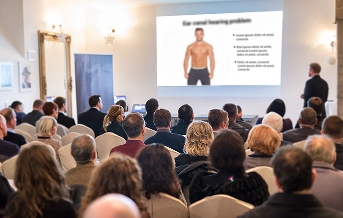
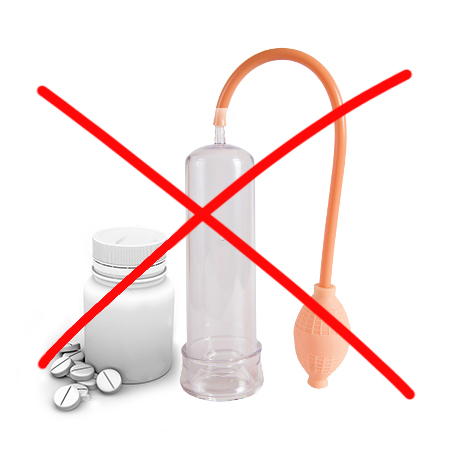
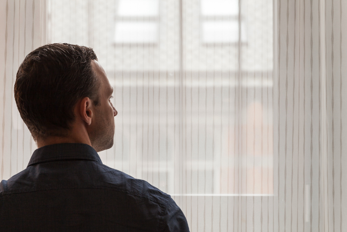

по-бърза реакция на сексуални стимули, подобрена ерекция
Ерата на химическите добавки, неефективните мехлеми и пенис помпите приключи! Революционното средство на българския професор ви позволява натурално да постигнете силна ерекция за 4 секунди.
Новият метод за справяне с мъжките здравословни проблеми ще наруши ли пазара на помпи и химията за ерекция? Най-добрите сексолози не се съмняват, че това ще се случи. С разработката на българския учен с естествена макромолекулна формула, се получи дългоочакван пробив в борбата за здравето на мъжете и сексуалната готовност и за сексуалното желание разбира се.
Повече от 14 000 потребители на тази процедура сега постигат силна ерекция само за 4 секунди от самата сексуална възбуда. При 98% от тях ерекцията продължава около 45 минути (+/- 3 минути). И 89% от потребителите отбелязват увеличение на либидото няколко пъти. Такива резултати постигат дори мъже, които са имали сериозни проблеми с ерекцията и не са могли да имат полов акт. Как е възможно?
Професор Георги Милошев (специалист по молекулярна биология) реши да се възползва от медицинския напредък и веднъж завинаги да спаси мъжете от срама и комплексите, свързани със слабата ерекция. Това беше началото на революцията в сексологията. След 11 месеца лабораторни изследвания професорът е разработил естествена, безопасна и лесна за използване формула, която позволява незабавна ерекция в отговор на сексуална стимулация. Здравословна естествена ерекция като здраво 20-годишно момче.
Професионалните медицински списания наричат това лечение „новаторски напредък в сексологията“, а професорът е получил множество номинации за награди. Благодарение на действието на неговата формула дори мъжете, които от години страдат от проблеми с ерекцията, са вече пълни с енергия и готови да правят секс когато пожелаят. Така са се отървали от необходимостта да използват помпи, вредни химически добавки и неефективни мехлеми, които трябваше да се прилагат непосредствено преди полов акт.
„Помпите и химиите за повишаване на потенцията са - изгубени пари!“ Какви са причините да мислите по този начин?
Тези думи вече са потвърдени от повече от 14 хиляди доволни потребители на революционното средство за пълно възстановяване на потентността! Мъжете, приели формулата на професор Милошев, вече са хвърлили своите помпи, мехлеми и добавки в кошчето. И решихме да ви разкажем повече за тези популярни, но неефективни решения за подобряване на ерекцията. По-специално, да се посочи наличието на дефекти и да се анализират ежедневните проблеми, пред които са изправени мъжете, които използват тези методи. Ето нашите констатации:
-
Помпите са скъпи и неефективни
Професионалните пенисни помпи струват между 140 и 230 евро и не са еднократни разходи. Тези устройства трябва да се използват преди всеки полов акт, което означава, че износените или счупени части на помпата трябва да се сменят и много често струват много повече от ново устройство! Въпреки че, разбира се, някой може да си позволи да похарчи такива пари, но като правило този метод решава проблема само за няколко минути. След това пенисът се връща в патологичното си състояние.
-
Помпите причиняват срам и дискомфорт
За да използвате вашата помпа, трябва да я използвате непосредствено преди полов акт. И това е много неудобен процес: необходимо е да преместите пръстена, който се намира на помпата, и да го поставите в основата на пениса, така че кръвта да не се оттича от пениса. Само с този пръстен можете да правите секс. Мъжете, които избират да използват помпа, обикновено много съжаляват. Те се срамуват, когато една жена поглежда пениса им със съчувствие и пита: `Какво ти има на пениса?`
-
Химическите мехлеми, гелове и добавки са вредни за здравето
Няма абсолютно никакви доказателства, че мехлемите за повишаване на ерекцията действат. Освен това мехлемите и геловете могат да причинят неприятни алергични реакции. На свой ред химическите добавки за подобряване на ерекцията товарят черния дроб и влошават способността за концентрация. Експертите предупреждават, че подобни решения са начин да се помогне на отчаяните мъже, които очакват бърз ефект. Но всъщност, за да засилите безопасно сексуалното си желание и да бъдете готови за секс, когато сте сексуално възбудени, трябва да изберете решение, което работи в хармония с природата.
-
Използването на помпа винаги е с висок риск
Най-лошото от всичко е, че използването на помпа може да причини увреждане на кръвоносните съдове, болезнена ерекция, проблеми с еякулацията или изтръпване на пениса. Ако използвате непроверени продукти, можете дори да предизвикате временна или в някои случаи трайна импотентност!
-
Тези методи премахват цялото удоволствие от секса
Тези методи на еректилна стимулация са неудобни и напълно премахват сексуалното удоволствие. Контактът с жена преминава от спонтанна страстна близост до часове на изтощителна подготовка. Помпи, добавки, мехлеми и ... постоянният страх от провал. Това правилно и естествено ли е? Без всичко това мъжът все още ли би останал мъж?
Это ужасное чувство, полное стыда и смущения. Ни один мужчина не захочет испытать такое. Еще хуже, если мужчина решается использовать помпу во время прелюдии, мужчине приходится полагаться на терпение и понимание своего партнера. Смотреть ей в глаза, скрывая нервозность, страх и замешательство. На практике шансы на качественную прелюдию практически равны нулю. Удовольствие становится болезненным и постыдным долгом.
Ето защо природното лекарство на проф. Милошев е истински пробив в борбата за здравословна сексуална потентност и интензивни усещания, които сближават партньорите - пълното лечение продължава само 28 дни!
Помпите, мехлемите, геловете и химическите добавки въздействат изкуствено и временно на ерекцията. А лечението на проф. Милошев, напротив, разширява кавернозните тела и предизвиква тяхното максимално кръвоснабдяване в отговор на сексуален стимул. Съставките в продукта имат силно стимулиращи свойства. Приемането на тези вещества ежедневно кара мъжете да чувстват повече сексуална енергия и пенисът им винаги е готов за действие.
Сега всеки мъж може да увеличи продължителността на половия акт до 45 минути
Продуктът вече се предлага на дребно под името . е 100% натурални капки, които се приемат лесно. Просто разтворете 25 капки в чаша вода или сок и приемайте 2 пъти на ден. не съдържа вредни химикали и употребата му е напълно безопасна за организма, това доказаха проучванията на германския изследователски център във Франкфурт. Тези проучвания също така показват, че ефикасността на лечението е над 98%. Това позволи на мъжете на възраст между 27 и 89 години да постигнат впечатляващи резултати само за 28 дни, увеличавайки продължителността на ерекцията средно със 72,9%. Независимо от възрастта и качеството на сексуалния живот преди лечението.
При мъжете, участвали в тестовете, се разкрива пълният потенциал на кавернозните тела и веднага след прилагането на лекарството, повече кръв започва да тече в пениса. По този начин състоянието на ерекция се е подобрило значително. През следващите дни либидото също се повишава. Но това не е всичко. След 28 дни лечение, мъжете, участвали в тестовете, единодушно признаха, че сексът става по-интензивен, жив и способен да накара партньорите им да получат до 5 оргазма само за един полов акт.
Документираните резултати от лечението говорят сами за себе си:
повишено либидо и по-голямо удоволствие от секса
увеличаване на продължителността на половия акт
премахване на проблеми с потентността във всички интимни ситуации
1-ва седмица
2-ра седмица
3-та седмица
4-та седмица
1-ва седмица - интеграция на дефицита на метаболити и прочистване на съдовете на пениса от токсини - подобряване на условията за ерекция
2-ра седмица - повишено либидо с 83% и повишен тестостерон до 9 нанограма - повече удоволствие от секса
3-та седмица - увеличаване на продължителността на полов акт до около 45 минути (+/- 3 минути)
4-та седмица - силна ерекция в отговор на сексуален стимул само за 4 секунди
Историята на г-н М.С. (на 37 години) - един от първите мъже в България, който е използвал :
`Работих в международна компания на доста висока позиция. Всеки ден беше много стресиращо, но имах голям успех и преди няколко години ми се струваше, че животът не може да бъде по-добър! Това беше преди да се срещна с очарователната ми колежка от отдел продажби. .. Харесвах я дълго време, тя също ме хареса, така че когато най-накрая се озовахме в къщата ми, не беше изненадващо, че веднага отидохме в спалнята. Но това беше кошмарът... Пениса ми не искаше да стане! Момичето се опита да ми помогне по всякакъв възможен начин, тя показа голямо разбиране, и в крайна сметка нищо не се случи между нас, но това не променя факта, че никога през живота си дотогава не съм чувствал такова унижениее.
Опитах се да се убедя, че това е просто криза. Не съм правил секс от около 3 месеца. Бях толкова запален по китайския проект, че дори нямах време да мисля за жени. И така, след онази злощастна нощ реших да се срещна отново със същото момиче и да докажа на нея и на себе си, че съм готов за секс и че съм един истински мъж. За съжаление всичко приключи както последния път и направо исках да се самоубия от срам... Този път момичето не беше толкова тактично с мен, както последния път. Чух много неприятни неща по свой адрес. През следващите седмици не можех да понеса факта, че това момиче ме гледаше с презрение, когато случайно се срещнахме в коридора на офиса. Може би това си беше параноя, но бях сигурен, че и други колеги започнаха да ме гледат странно ... Мислех, че тя е разказвала на колегите за всичко онова. На следващия ден, от този стрес, напуснах работата си, но не можах да се накарам веднага да започна да търся друга. Знаех, че имам проблеми за решаване. Живеех със спестяванията си и започнах да изучавам по-подробно проблемите с ерекцията. Купих куп продукти за подобряване на ерекцията, опитвайки се да реша проблема си. Казах си: сега е подходящ момент за облекчаване на стреса и след това с нова сила рестартирам живота си: в професионален и сексуален план. Опитах различни видове добавки за потентност, но със същия успех можех да ги хвърля в тоалетната - ефектът щеше да бъде същият, тоест нулев. След повечето от тези добавки дори не можех да шофирам нормално (очите ме боляха и имах чувството, че имам температура). Бях съкрушен: напълно загубих желанието си да правя любов... И когато разговарях с жени, бях страшно нервен. Загубих увереността си. Освен това спестяванията ми бяха почти приключили и трябваше да си намеря първата работа, на която попадна, за която никога не съм мислил дори, със сигурност не съм и мечтал!
Но един ден разбрах за . И ако не бях започнал да го приемам, щях да направя най-голямата грешка в живота си. Стресът доста ми попречи да имам нормален сексуален живот, но с ми отне само 4 седмици, докато всичко се нормализира и имах напълно ново представяне в леглото! За първи път в живота ми жените, с които спя, започнаха да имат няколко оргазма и да се връщат при мен, защото искат да правят още секс с мен! Новопридобитото ми самочувствие е неописуемо - благодарение на това успях да си намеря нова работа, дори по-добра от предишната ми и със заплата почти 2 пъти по-висока! Знам, че всичко това е самочувствие и увереност. Благодаря ви много ! `
Защо да страдате от комплекси и да харчите много пари за неефективни устройства, когато можете да получите здрава и силна ерекции, която продължава часове и се постига незабавно от самото сексуално желание. И това е безопасно за здравето и по начин достъпен за всеки мъж в България. Благодарение на дългосрочната силна ерекция, вие гарантирате на себе си и на партньора си незабравимо удоволствие и наслада от секса!
Ефективността на несъмнено е доказана от Германския изследователски център във Франкфурт. Професор Милошев постоянно получава награди за своите научни открития.
Добрата новина е, че за участие в клуба за отстъпка, съфинансиран от здравни клиники за мъже в страната, можете да поръчате с 50% по-евтино. Само първите 200 кандидати, които кандидатстват, ще получат съфинансиране. Промоцията е валидна до Лечението може да бъде получено изключително и само на този сайт.


Коментари
Прочетете коментарите към статията `Ерата на пенис помпите приключи!`
Стоян Велев
И казват, че българите не били успявали в глобален мащаб! Отличен резултат. Браво на нашия сънародник!
Марин К.
Получих този продукт с огромна отстъпка, евтин и най-накрая мога да правя нормален секс! Отново се чувствам млад. Съветвам ви да ползвате.
Христо
Чувствам, че нещо не е наред. Как отнема само 28 дни, за да стане члена твърд? Изглежда като измама
Галин Мойсеев
Христо, всеки път, когато изследователския институт провежда клинично изпитване на лекарство, резултатите се предоставят за определен период от време. Това са насоки за тестване. Средният резултат на тестовата група беше 28 дни !!! Това е впечатляващ резултат. Всичко тук е правилно написано.
Пора
Пиша, защото се измъчвах с помпи почти 6 месеца. Похарчих само 8000 лева за тях, не мисля, че е много скъпо, ако наистина помогаше. И от тях имах дискомфорт. Така че дори помпата не работи без пръстен, който притиска пениса ви в основата и ако пръстенът не бъде поставен, тогава цялата кръв ще изтече от пениса и пак ще стане мек. Веднъж забравих да сваля пръстена, така че почти си останах без пенис ... Опасно ее. И не е толкова голям кефаа от секса. Направо си е тъпотия. И тук, почти за без пари, такъв продукт. Разбира се, че поръчах! Не знам дали работи за всички, но си работи при мен! Членът е надървен и чувствителността е добра. Струва си да опитате всички.
Готиния
Взех и имам голяма полза от нея. Приемам я малко време,от две седмици, но вече виждам разлика. Ерекцията е много по-добра и продължителна. Пенисът е твърд и жилав, както трябва да бъде. И това без помпите и другото дяволство, мога да правя секс нормално. Най-накрая живея като нормален мъж!
Герман Станев
След като посетих този сайт, не очаквах да прочета за такива големи неща. Спешно се нуждая от това средство. Писна ми от стреса в секса. Става или не става ... уморен съм вече!
Играча
Вече съм на възраст, така че имам въпрос към тези, които вече са приели това средство... На колко години сте? Тук има ли мъже над 55 години? Бих искал да знам дали имам шанс. Страхувам се да говоря с жените. Имам проблеми с ерекцията ... Моля, отговорете.
Стефо
Играч, аз също имах проблеми с ерекцията. С този продукт реших проблемите, след три седмици се оправих. Спрях да се страхувам, че жените ще ми се смеят. Затова ви препоръчвам . На 63 години съм.
Играча
Стефо, благодаря ти много за отговора, тогава поръчвам това лечение
Ицката
Аз също пих и сега пенисът ми не се бави, а веднага се вдига, когато е необходимо =) Препоръчвам
Малин Колев
Бих поръчал продукта, но се страхувам, че може да не работи. Вече похарчих много пари за безполезни методи
Роберто Боршуков
Еха !! Току-що прочетох, че има тройна гаранция с този продукт, в случая няма от какво да се притеснявам. Ще поръчам и след това ще пиша за резултатите си тук! Изчакайте да видим!
Константин Узунов
Доста съм млад (на 36 години) и не се оплаквам от проблеми с ерекцията, но след дълъг работен ден изобщо нямам желание за секс. Приятелката ми ме дразнеше, че трябва да я боли глава нея и да се оправдава, а не аз: P Ето защо използвам . Това е единственото решение, което наистина работи за ерекция и може да задоволи всяко момиче, добре, моето със сигурност :) 2 предимства в 1: P
Максим Герасимов
Очаквам праткаа с тоя продукт, скоро ще пиша за ефектите